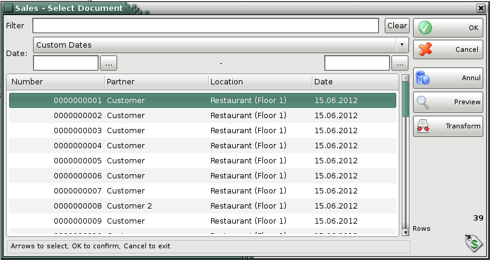
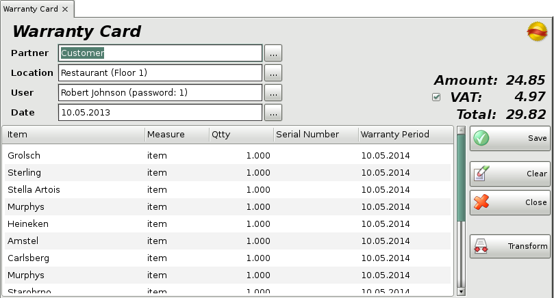

Warranty Card
The Warranty Cards operation helps you to issue warranty cards for free post-sale servicing in the event of an item damage.
After choosing the warranty card operation, the window for selecting sale document is opened. You may point which document to be opened to issue warranty card.

Select document and then click the OK button.
Through the button Transform the particular warranty card might be transformed in other operation.

To fill in the Warranty card window do the following:
In the Partner field fill in the name of the
customer/company, to which the warranty card is
issued.
To edit a partner do one of the following:
- use keyboard
shortcut F4 in the partners list;
- use the Enter key in
the partners list;
- double-click the partner in the list;
- type the name
of the partner in the text field;
- type the code of the partner in the text
field.
In the Location field fill in the name or code
of the location from which items will be taken.
To edit a location do
one of the following:
- use keyboard shortcut F4 in the locations
list;
- use the Enter key in the locations list;
- double-click
the location in the list;
- type the name of the location in the text
field;
- type the code of the location in the text field.
In the User field fill in the name of the user,
who will perform the operation.
To edit a user do one of the following:
-
use keyboard shortcut F4 in the users list;
- use the Enter
key in the users list;
- double-click the user in the list;
- type the
user�s name in the text field;
- type the user�s code in the text field.
In the Item field fill in the items, which
participate in the operation.
To edit an item do one of the following:
-
use keyboard shortcut F4 in the items list;
- type the name of the
item in the text field;
- double-click the item in the list;
- type the
code of the item in the text field;
- type the barcode of the item in the
text field.
In the Date field fill in the date of the
document.
Change the date in the Calendar window by
pressing the F4 key or by double-clicking in the text field.

The number of the sold items is filled in the Quantity column. Write the serial number of the item in the Serial Number column and the warranty period in the Warranty Period column. The default warranty period is one year after the dateif the document.
If you are working with lots the fields Serial Number and Warranty Period are filled with the entered serial number and expiration date of the corresponding lot for the chosen item.
To save the document, press the F9 key or Save button. To cancel the operation, press the Esc key or Close button.
When you save the operation, the application may offer you to print the sales document, depending on the Print Settings.
�2006-2015 Microinvest, All rights reserved